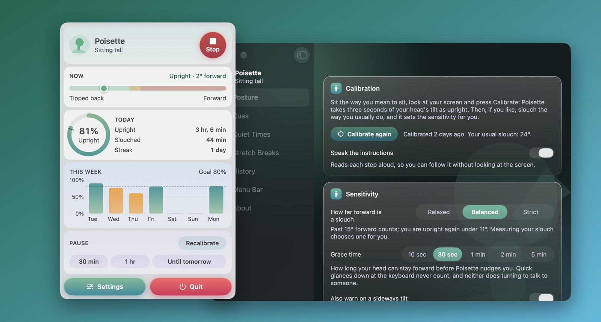
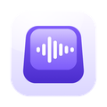

Poisette
Aufrecht sitzen, sanft erinnert von den Kopfhörern, die Sie ohnehin tragen.
Ausprobieren
Sehen Sie, was Poisette bemerkt:
Aufrechte Haltung
Eine Simulation. Die echte App nutzt die Kopferfassung in AirPods Pro, AirPods Max und Beats Fit Pro.

Was die App kann
AirPods Pro, AirPods (3. Generation oder neuer), AirPods Max und Beats Fit Pro kennen die Neigung Ihres Kopfes. Poisette lernt, wie Sie aussehen, wenn Sie aufrecht sitzen, und erinnert Sie, wenn Ihr Kopf zu lange nach vorn gesunken ist. Auf dem Mac wacht die App von der Menüleiste aus, während Sie arbeiten. Auf iPhone und iPad wacht sie während einer Haltungssitzung von 25, 50 oder 90 Minuten oder einer offenen, mit einem ruhigen Fokusklang, durch den sie auch bei gesperrtem Bildschirm weiter aufpasst.
- Lernt Sie in drei Sekunden kennen. Setzen Sie sich aufrecht hin und kalibrieren Sie; sacken Sie auf Wunsch noch einmal zusammen, dann stellt die App ihre Empfindlichkeit selbst ein.
- Klug, nicht nervig. Eine Toleranzzeit, Blicke auf die Tastatur werden ignoriert, Umdrehen zum Reden ebenso, und zwischen den Erinnerungen liegt eine Pause.
- Erinnerungen nach Ihrem Geschmack. Auf dem Mac ein sanftes Abdunkeln des Bildschirms, das verschwindet, sobald Sie sich aufrichten, ein Klang, eine Mitteilung oder nur das Symbol. Auf iPhone und iPad ein Klang, ein sanftes Tippen und der Hinweis „Aufrecht sitzen“, solange Poisette geöffnet ist, oder ein Klang und eine Mitteilung, während die App im Hintergrund spielt.
- Still, wenn es sein soll. Kopfhörer heraus, ein Anruf, und auf dem Mac außerdem, wenn er gesperrt ist, bei einem Video im Vollbild oder außerhalb Ihrer aktiven Zeiten.
- Ihr Fortschritt. Der heutige Wert, eine Serie, Wochen- und Monatsdiagramme, Ihre besten und schlechtesten Stunden und Widgets.
- Pausen zur Nackendehnung, bei denen Ihre Kopfhörer jede Bewegung mitverfolgen.
Erfordert macOS 14 Sonoma oder neuer bzw. iOS und iPadOS 17 oder neuer sowie Kopfhörer mit Kopferfassung. Ein Kauf gilt für Mac, iPhone und iPad. Poisette erinnert an gutes Sitzen und ist kein Medizinprodukt.
Kamerabasierte Haltungstrainer im Vergleich zu Poisette
Haltungscoaching ganz ohne Kamera und ohne Speicherung persönlicher Daten.
| Bereich | Eine auf Sie gerichtete Kamera | Poisette |
|---|---|---|
| Kamera | Erfordert eine Kamera, die Sie ununterbrochen beobachtet | Keine Kamera: nutzt die Bewegungssensoren Ihrer AirPods |
| Einsatzort | Nur am Schreibtisch und bei gutem Licht | Überall, wo Sie Kopfhörer tragen – im Hellen wie im Dunkeln |
| Ständige Hinweise | Schlägt bei jedem kurzen Blick nach unten sofort Alarm | Intelligente Karenzzeit: Blicke auf die Tastatur werden ignoriert |
| Bei Telefonaten | Unterbricht Sie auch während wichtiger Besprechungen | Lautlos bei Anrufen oder wenn Sie die Kopfhörer absetzen |
| Privatsphäre | Videobilder von Ihnen müssen analysiert werden | Kopfbewegungen werden live verarbeitet und niemals gespeichert |
Datenschutz in einem Absatz
Poisette hat keinen Netzwerkzugriff, kein Konto und kein Tracking. Die Bewegung Ihres Kopfes wird verwendet, sobald sie eintrifft, und nie gespeichert; nur die Minuten, in denen Sie aufrecht und zusammengesackt saßen, werden aufbewahrt, auf Ihrem Gerät. Die vollständige Datenschutzerklärung sagt dasselbe ausführlicher.
Weitere Apps vom selben Entwickler
Kleine Apps, jede dafür gemacht, eine Sache gut zu machen. Keine Accounts, keine Werbung, und keine davon verfolgt Sie.
 StatuetteCPU, Speicher, Disk und Netzwerk in der Menüleiste.Mac
StatuetteCPU, Speicher, Disk und Netzwerk in der Menüleiste.Mac TocketteEin Timer, nur einmal ziehen von der Menüleiste entfernt.Mac
TocketteEin Timer, nur einmal ziehen von der Menüleiste entfernt.Mac ZonetteAlle Zeitzonen, die Ihnen wichtig sind, nur einen Klick entfernt.MaciPhone & iPadAndroid
ZonetteAlle Zeitzonen, die Ihnen wichtig sind, nur einen Klick entfernt.MaciPhone & iPadAndroid LunetteMond und Sonne auf einen Blick.MaciPhone & iPadAndroid
LunetteMond und Sonne auf einen Blick.MaciPhone & iPadAndroid LunaretteDer Mondkalender in vier Traditionen.MaciPhone & iPadAndroid
LunaretteDer Mondkalender in vier Traditionen.MaciPhone & iPadAndroid PausetteSanfte Pausen für Augen und Rücken.Mac
PausetteSanfte Pausen für Augen und Rücken.Mac HushetteRuhige Umgebungsgeräusche, die sich nie wiederholen.MaciPhone & iPadAndroid
HushetteRuhige Umgebungsgeräusche, die sich nie wiederholen.MaciPhone & iPadAndroid
TapsodyKlänge einer mechanischen Tastatur beim Tippen.Mac ThrumlineIhre Herzfrequenz, live in der Menüleiste.Mac
ThrumlineIhre Herzfrequenz, live in der Menüleiste.Mac NightjarHält Ihren Mac wach. Ganz ehrlich.Mac
NightjarHält Ihren Mac wach. Ganz ehrlich.Mac UmbretteDimmt alles außer dem Fenster, in dem Sie arbeiten.Mac
UmbretteDimmt alles außer dem Fenster, in dem Sie arbeiten.Mac PrompetteEin Teleprompter direkt unter Ihrer Kamera.MaciPhone & iPadAndroid
PrompetteEin Teleprompter direkt unter Ihrer Kamera.MaciPhone & iPadAndroid TalletteEin Papierstreifen für Ihre Rechnungen.MaciPhone & iPadAndroid
TalletteEin Papierstreifen für Ihre Rechnungen.MaciPhone & iPadAndroid ProbetteAlles Technische über eine Mediendatei, in Worten.MaciPhone & iPadAndroid
ProbetteAlles Technische über eine Mediendatei, in Worten.MaciPhone & iPadAndroid BindetteAus Audiodateien wird ein richtiges Hörbuch.MaciPhone & iPadAndroid
BindetteAus Audiodateien wird ein richtiges Hörbuch.MaciPhone & iPadAndroid LettretteÖffnet winmail.dat- und .msg-Dateien so, wie sie gesendet wurden.MaciPhone & iPad
LettretteÖffnet winmail.dat- und .msg-Dateien so, wie sie gesendet wurden.MaciPhone & iPad Nhanh TayVier Antworten in die richtige Reihenfolge. Schnell.MaciPhone & iPadAndroid
Nhanh TayVier Antworten in die richtige Reihenfolge. Schnell.MaciPhone & iPadAndroid PinetteNotizen, die Sie im Blick behalten.MaciPhone & iPadAndroid
PinetteNotizen, die Sie im Blick behalten.MaciPhone & iPadAndroid UsagetteDie Nutzungslimits von Claude in der Menüleiste.Mac
UsagetteDie Nutzungslimits von Claude in der Menüleiste.Mac SquiggoZeichne mit einem freundlichen Begleiter.MaciPhone & iPadAndroid
SquiggoZeichne mit einem freundlichen Begleiter.MaciPhone & iPadAndroid ForemanAufträge, Angebote und Rechnungen fürs Handwerk.MaciPhone & iPadAndroid
ForemanAufträge, Angebote und Rechnungen fürs Handwerk.MaciPhone & iPadAndroid TilewakeEin Schiebepuzzle, dessen Bilder erwachen.MaciPhone & iPadAndroid
TilewakeEin Schiebepuzzle, dessen Bilder erwachen.MaciPhone & iPadAndroid Chăm luyệnGrundschulübungen auf Vietnamesisch, vorgelesen.MaciPhone & iPadAndroid
Chăm luyệnGrundschulübungen auf Vietnamesisch, vorgelesen.MaciPhone & iPadAndroid SalahGebetszeiten für die ganze Familie.MaciPhone & iPad
SalahGebetszeiten für die ganze Familie.MaciPhone & iPad